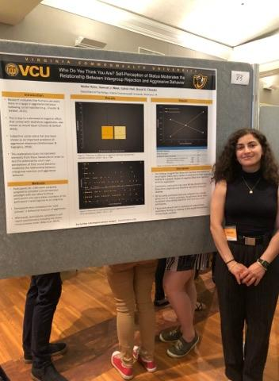
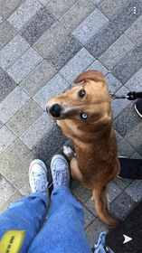
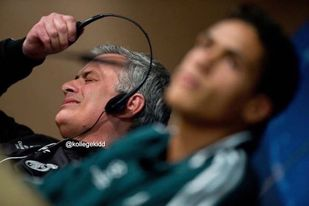

Bulleted list of my background in Psych, Neurology, and Healthcare.
Hobbies
 Things I'll get back to after June 24th, 2022
Things I'll get back to after June 24th, 2022
Goals for this Program 
Nadia Hawa
- Dog Enthusist
- Coding Hopefull
- Terrible Typer
- Washington, DC
- nadia.h.hawa@gmail.com
Fun Facts
- Very small hands, club thumbs
- Loves sour beers
- Looking to move to New York
- Speaks broken Arabic 